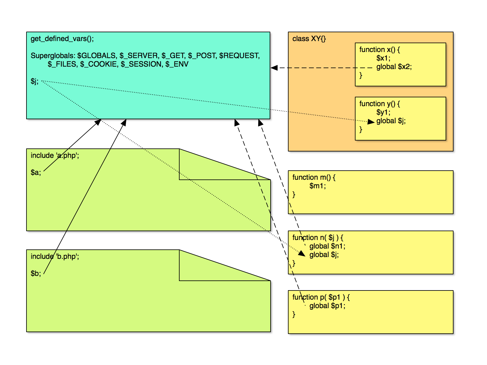

Quick check
<?php
error_log( print_r( $_SERVER, true ) );
print_r( $_SERVER );
| Boolean | |
| Integer | |
| Float | |
| String | |
| Array | |
| Associative array | |
Multidimensional array (array of arrays or objects)
$class = array(
0 => array(
'name' => 'Dasher',
'age' => 14,
'city' => 'Svalbard',
),
1 => array(
'name' => 'Dancer',
'age' => 13,
'city' => 'Fairbanks',
),
2 => array(
'name' => 'Prancer',
'age' => 14,
'city' => 'Reykjavik',
),
);
$var = $class[0]['name']; // 'Dasher'
| Newline character | |
| Literal \n | |
| Tab character | |
| Literal \t | |
| Assignment | |
| Comparison | |
| Logical | |
| Incrementing | |
| String | |
Order of operations
if ( true ) {
// Do this stuff
}
if ( true ) {
// Do this stuff
} else {
// Do this other stuff
}
if ( ! true ) {
return; // or return false;
}
// Valid but not awesome
if ( true ) do_stuff();
if ( true )
do_stuff();
// Alternative syntax (popular in themes/templates)
if ( true ) :
// Do this stuff
else :
// Do this other stuff
endif;
while ( true ) {
// Do this stuff
}
while ( true ) :
// Do this stuff
endwhile;
foreach ( $r as $k => $v ) {
// Do this stuff
// $k and $v are available as variables in this loop
}
foreach ( $r as $k => $v ) :
// Do this stuff
endforeach;
switch ( $var ) {
case '1':
// Do this
break;
case '3':
case '4':
// Do this other stuff
case '5':
// Do this other stuff from 3/4 plus more
break;
default:
// Do some default stuff here
}
switch ( $var ) :
// cases here
endswitch;
for ( $i = 0; $i < $number; $i++ ) {
// Do this stuff
// $i is available as a variable in this loop
}
for ( $i = 0; $i < $number; $i++ ) :
// Do this stuff
endfor;
Exercises
echo() all numbers evenly divisible by 3 between 42 and 105.error_loging each name.Finding functions
// Function definition
function ascii_decorate( $name, $glitter = '***' ) {
if ( empty( $name ) ) {
$name = '*';
}
echo $glitter . "( {$name} )" . strrev( $glitter ) . '
';
}
// Actually calling the function
ascii_decorate( 'Pandamonium' );
ascii_decorate( 'Pandamonium', '.o.O' );
***( Pandamonium )***
.o.O( Pandamonium )O.o.
function absint( $maybeint ) {
return abs( intval( $maybeint ) );
}
function my_absint( $int ) {
echo absint( $int ) . '
';
}
// Returned, so echo
echo absint( -107 );
echo absint( 6.4 );
// Echo in the function
my_absint( "I am a string" );
my_absint( 0123 );
107
6
0
83
function the_title( $before = '', $after = '', $echo = true ) {
$title = get_the_title();
if ( strlen( $title ) == 0 )
return;
$title = $before . $title . $after;
if ( $echo )
echo $title;
else
return $title;
}
$title = the_title( '<h3>', '</h3>', false );
the_title( '<h3>', '</h3>' );
This Is My Title
Protect from namespace collisions
if ( ! function_exists( 'my_precious' ) ) {
function my_precious() {
return false;
}
}
Exercises
$names.print_name that loops through the array and prints out each name and age.Ternary operators
if ( $color == 'green' ) {
$muppet = 'kermit';
} else {
$muppet = 'gonzo';
}
$muppet = ( $color == 'green' ) ? 'kermit' : 'gonzo';
Needle/haystack versus haystack/needle
// String search functions -- haystack / needle
$search = 'cat';
$str = 'The cat in the hat';
strpos( $str, $search )
// Array search functions -- needle / haystack
$search = 'cat';
$arr = explode( ' ', $str );
in_array( $search, $arr )
Heredoc
$var = <<<WP
This is for testing,
so not recommended for
production sites—yet.
WP;
&$variable
function add_one( &$number ) {
$number++;
}
$n = 5;
add_one( $n );
echo $n;
6
@$variable or @function
$file = @file( 'nope' );
try {} catch ( Exception $e );
try {
echo inverse( 0 ) . "\n";
} catch ( Exception $e ) {
echo 'Caught exception: ' . $e->getMessage() . "\n";
}
Magic constants
__LINE__
, __FILE__
, __DIR__
, __FUNCTION__
, __CLASS__
, __METHOD__
, __TRAIT__
, __NAMESPACE__

class {} versus object
class Book {
// Some stuff
}
$book = new Book();
Define a class
class Book {
// Properties
var $title;
// Methods
function get_title() {
return $this->title;
}
function set_title( $title ) {
$this->title = $title;
}
}
$this
Instantiate the class... creating an object
// Popular in instantiating plugins
new Book();
// New Book has handle $book
$book = new Book();
Interacting with objects
$thgttg = new Book();
$thgttg->set_title( 'The Hitchhiker's Guide to the Galaxy' );
$tjoc = new Book();
$tjoc->set_title( 'The Joy of Cooking' );
// get method
echo $thgttg->get_title() . "\n";
// direct access
echo $tjoc->title . "\n";
The Hitchhiker's Guide to the Galaxy
The Joy of Cooking
__construct()
parent::__construct() to call parent constructor.
class Book {
...
__construct( $title ) {
if ( ! empty( $title ) ) {
$this->set_title( $title );
}
}
...
}
Access restrictions
->, default restrictionextends
class Encyclopedia extends Book {
var $volumes;
function get_volumes() {
return $this->volumes;
}
function set_volumes( $volumes ) {
$this->volumes = $volumes;
}
}
class Encyclopedia extends Book {
function __construct( $title, $volumes ) {
Book::set_title( $title );
// OR
parent::set_title( $title );
// OR
parent::__construct( $title );
$this->set_volumes = $volumes;
}
}
abstract
abstract class Keyring_Service {
const NAME = '';
function build_token_meta( $token ) {
return apply_filters( 'keyring_access_token_meta', array(), $this->get_name(), $token, null, $this );
}
function get_name() {
$c = get_called_class();
if ( '' != $c::NAME )
$name = $c::NAME;
else
$name = strtolower( $c );
return $name;
}
}
abstract class Keyring_Service {
abstract function request_token();
abstract function verify_token();
abstract function request( $url, array $params );
}
Protect from namespace collisions
if ( ! class_exists( 'Practical_Development' ) ) {
class Practical_Development {
// Class definition
}
}
Less common: method_exists(), property_exists()
Singleton pattern
class The_One {
private static $instance;
private $name;
public static function get_instance( $name ) {
if ( null === self::$instance ) {
self::$instance = new The_One( $name );
}
return self::$instance;
}
protected function __construct( $name ) {
$this->name = $name;
}
private function __clone() {}
}
class The_One {
function get_name() {
return $this->name;
}
}
$neo = The_One::get_instance( 'Neo' );
echo $neo->get_name() . '
';
$morpheus = The_One::get_instance( 'Morpheus' );
echo $morpheus->get_name() . '
';
Neo
Neo
Exercises
get_last_answer(). Bonus: Store the last 5 problems that were solved.
include 'class.calculator.php';
$calculator = new Calculator;
$calculator->add( 5, 2 );
$calculator->sub( 8, 5 );
$calculator->get_last_answer();
$calculator->mult( 3, 1 );
$calculator->get_last_answer();
$calculator->div( 56, 8 );
$calculator->get_last_five_answers();